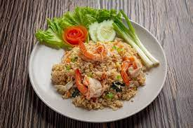

Go to main page
Fried Rice

Nasi Goreng, a beloved Indonesian dish, is a flavorful and aromatic stir-fried rice dish that tantalizes the taste buds with its harmonious blend of sweet, salty, and savory flavors. Made with leftover rice, this versatile dish incorporates a medley of fresh vegetables, protein such as shrimp, chicken, or tofu, and a combination of garlic, onions, and sauces like sweet soy sauce and fish sauce for depth. Garnished with sliced cucumber, tomato, fried shallots, and fragrant herbs like cilantro or scallions, Nasi Goreng delivers a satisfying and hearty experience, making it a cherished main course enjoyed both in Indonesia and by food enthusiasts worldwide.
Ingredient
- 3 cups cooked rice (preferably leftover rice)
- 2 tablespoons vegetable oil
- 3 cloves garlic, minced
- 1 small onion, finely chopped
- 2 teaspoons sweet soy sauce (kecap manis)
- 2 teaspoons soy sauce
- 1 teaspoon fish sauce (optional)
- 1 teaspoon shrimp paste (terasi), dissolved in 1 tablespoon water (optional)
- 1 cup mixed vegetables (carrots, peas, bell peppers, etc.)
- 1 cup cooked protein (shrimp, chicken, beef, tofu, etc.)
- 2 eggs, lightly beaten
- Salt and pepper to taste
- Sliced cucumber and tomato, for garnish
- Fried shallots, for garnish
- Fresh cilantro or scallions, chopped, for garnish
- Lime wedges, for serving
Steps
- Heat the vegetable oil in a large wok or skillet over medium-high heat.
- Add the minced garlic and chopped onion to the pan, and stir-fry for 1-2 minutes until fragrant and slightly golden.
- If using shrimp paste, dissolve it in water and add it to the pan, stirring well.
- Add the mixed vegetables and cooked protein to the pan, and stir-fry for another 2-3 minutes until the vegetables are slightly tender.
- Push the ingredients to one side of the pan and pour the lightly beaten eggs into the other side.
- Scramble the eggs until they are cooked through.
- Mix the scrambled eggs with the rest of the ingredients in the pan.
- Add the cooked rice to the pan, breaking up any clumps with a spatula. Stir-fry the rice with the other ingredients, ensuring everything is well combined.
- Drizzle the sweet soy sauce, soy sauce, and fish sauce (if using) over the rice. Stir well to distribute the sauces evenly.
- Season with salt and pepper to taste, and continue stir-frying for another 2-3 minutes until the rice is heated through.
- Remove from heat and garnish with sliced cucumber, tomato, fried shallots, and fresh cilantro or scallions.
- Serve hot with lime wedges on the side.